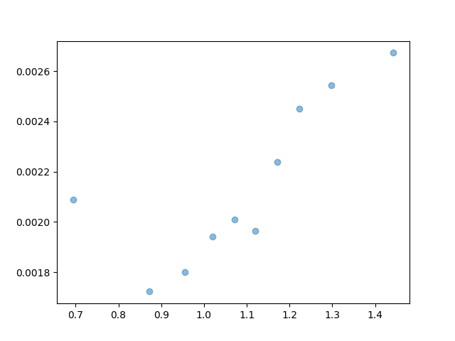

4 资本资产定价模型 (CAPM) 实证检验
4.1 实验目的
- 掌握 CAPM 模型的横截面回归检验方法: 学习横截面回归方法进行CAPM检验。
- 使用 Python 进行 CAPM 实证检验: 熟悉使用 Python 进行数据获取、回归分析和结果分析。
- 检验 CAPM 模型在中国股票市场的适用性: 使用中国股票市场数据，实证检验 CAPM 模型是否在中国市场成立。
- 理解 CAPM 模型的局限性: 通过实证结果，加深对 CAPM 模型局限性的理解。
4.2 实验原理
4.2.1 CAPM 模型回顾
资本资产定价模型 (CAPM) 描述了风险资产的预期收益率与系统性风险之间的关系。其核心公式为证券市场线 (SML)：
\(E(R_i) = R_f + \beta_i[E(R_m) - R_f]\)
其中：
- \(E(R_i)\)：资产 \(i\) 的期望收益率
- \(R_f\)：无风险利率
- \(\beta_i\)：资产 \(i\) 的 Beta 系数，衡量系统性风险
- \(E(R_m)\)：市场组合的期望收益率
- \([E(R_m) - R_f]\)：市场风险溢价
4.2.2 CAPM 模型的实证检验方法
本实验将采用横截面回归方法对 CAPM 模型进行实证检验：
横截面回归 (Cross-Sectional Regression)
检验股票的平均收益率是否与其 Beta 系数线性相关，模型如下：
\(R_{i} = \gamma_{0} + \gamma_{1} \beta_i + \eta_{i}\)
- \(\gamma_{0}\) 代表零 Beta 组合的预期收益率，如果 CAPM 成立，\(\gamma_{0}\) 应等于无风险利率 \(R_f\)。
- \(\gamma_{1}\) 代表风险溢价，如果 CAPM 成立，\(\gamma_{1}\) 应等于市场风险溢价 \(E(R_m) - R_f\)，且显著为正。
步骤：
- 第一步：时间序列回归估计 Beta: 使用时间序列回归模型，对每只股票 \(i\) 估计其 Beta 值 \(\beta_i\)。
- 第二步：横截面回归: 使用第一步估计的 Beta 值 \(\beta_i\) 作为解释变量，股票的平均收益率 \(R_i\) 作为被解释变量，进行横截面回归。
4.3 实验数据
本实验使用中国 A 股市场数据进行检验。
- 股票数据: 选取上证A股作为研究对象。
- 市场指数: 使用上证指数作为市场组合的代理。
- 无风险利率: 使用中国国债利率作为无风险利率的代理。
- 数据区间: 选择2015年至2024年的历史数据。
- 数据频率: 使用周度数据。
数据来源: CSMAR（学校IP登陆）
4.4 实验步骤
4.4.1 导入必要的 Python 库
import pandas as pd
import numpy as np
import statsmodels.api as sm
import os
from glob import glob
import matplotlib.pyplot as plt4.4.2 读取市场指数数据
###################################
# 第一步：读取市场指数数据
# 市场指数代表整体市场的表现，是CAPM模型中的市场组合
###################################
index_files = "./data/mktret_weekly/TRD_Weekm.xlsx"
market_data = pd.read_excel(index_files, header=0, skiprows=3, names=['Markettype', 'Trdwnt', 'Wretwdos', 'Dnstkcal'])
# 选择上证A股市场(Markettype=1)的流通市值加权平均回报率(Wretwdos)
# 流通市值加权平均回报率更能代表真实的市场表现，因为它考虑了不同股票的市场规模
market_data = market_data[market_data['Markettype'] == 1]
# 把Trdwnt（YYYY-WW）转换为两个变量：year和week
market_data['year'] = market_data['Trdwnt'].str[:4]
market_data['week'] = market_data['Trdwnt'].str[5:]
# 筛选year为2015至2024的数据
# 选择近10年数据，既保证样本量充足，又能反映当前市场特征
market_data = market_data[market_data['year'] >= '2015']
market_data = market_data[market_data['year'] <= '2024']4.4.3 读取无风险利率数据
###################################
# 第二步：读取无风险利率数据
# 无风险利率是CAPM模型的重要组成部分，代表投资者在不承担风险时的最低收益要求
###################################
rf_files = "./data/rf_weekly/TRD_Nrrate.xlsx"
rf_data = pd.read_excel(rf_files, header=0, skiprows=2, names=['Nrr1', 'Clsdt', 'Nrrdaydt'])
# 把rf从百分数单位转换为小数
# 统一单位便于后续计算超额收益率
rf_data['Nrrdaydt'] = rf_data['Nrrdaydt'] / 100
# 把Clsdt转换为日期格式
rf_data['Clsdt'] = pd.to_datetime(rf_data['Clsdt'])
# 把Clsdt转换为交易周份（周数从1开始）
# 这一步是为了将日度数据转换为周度数据，与股票和市场数据保持一致
rf_data['Trdwnt'] = rf_data['Clsdt'].dt.strftime('%Y-%U').apply(
lambda x: f"{x.split('-')[0]}-{int(x.split('-')[1]) + 1:02d}"
)
# 把Trdwnt转换为两个变量：year和week
rf_data['year'] = rf_data['Trdwnt'].str[:4]
rf_data['week'] = rf_data['Trdwnt'].str[5:]
# 对rf在year和week上算平均值
# 由于一周内可能有多个无风险利率数据，取平均值作为该周的代表值
rf_data = rf_data.groupby(['year', 'week']).agg({'Nrrdaydt': 'mean'}).reset_index()
# 筛选year为2015至2024的数据
rf_data = rf_data[rf_data['year'] >= '2015']
rf_data = rf_data[rf_data['year'] <= '2024']4.4.4 读取所有股票回报率数据
###################################
# 第三步：读取所有股票回报率数据(2015-2024)
# 个股回报率是CAPM检验的核心数据，用于估计Beta和验证模型预测
###################################
# 读取stockret_weekly中所有excel表格
stockret_folders = "./data/stockret_weekly"
stock_files = glob(os.path.join(stockret_folders, "*.xlsx"))
print(f"找到股票数据文件: {stock_files}")
# 创建一个空的DataFrame来存储所有股票数据
stock_data_list = []
# 循环读取文件
for file in stock_files:
temp_data = pd.read_excel(file, header=0, skiprows=3, names=['Stkcd', 'Trdwnt', 'Wretwd', 'Markettype'])
stock_data_list.append(temp_data)
# 合并所有股票数据
stock_data = pd.concat(stock_data_list, ignore_index=True)
# 只选择上证A股市场(Markettype=1)
# 保持与市场指数一致，确保样本的一致性
stock_data = stock_data[stock_data['Markettype'] == 1]
# 把Trdwnt转换为两个变量：year和week
stock_data['year'] = stock_data['Trdwnt'].str[:4]
stock_data['week'] = stock_data['Trdwnt'].str[5:]
# 筛选year为2015至2024的数据
stock_data = stock_data[stock_data['year'] >= '2015']
stock_data = stock_data[stock_data['year'] <= '2024']
# 检查Stkcd的唯一值的数量
# 了解样本中包含多少只股票，样本规模越大，结果越具有代表性
print(f"Stkcd的唯一值的数量: {stock_data['Stkcd'].nunique()}")4.4.5 合并数据框
###################################
# 第四步：合并数据框
# 将股票、市场和无风险利率数据合并，为后续分析做准备
###################################
# 将 stock_data 与 market_data 按 ['year', 'week'] 合并
merged_data = pd.merge(stock_data, market_data, on=['year', 'week'], how='left')
# 将 merged_data 与 rf_data 按 ['year', 'week'] 合并
merged_data = pd.merge(merged_data, rf_data, on=['year', 'week'], how='left')
# 新建market_excess_return列，计算市场超额回报率
# 市场超额回报率 = 市场回报率 - 无风险利率，代表承担市场风险获得的额外收益
merged_data['market_excess_return'] = merged_data['Wretwdos'] - merged_data['Nrrdaydt']
# 计算市场风险溢价
# 市场风险溢价是CAPM模型中的重要参数，代表投资者承担系统性风险的补偿
market_risk_premium = merged_data['market_excess_return'].mean()
print(f"市场风险溢价: {market_risk_premium}")4.4.6 时间序列回归估计Beta
###################################
# 第五步：时间序列回归估计Beta
# Beta是CAPM模型的核心参数，衡量个股对市场风险的敏感度
###################################
# 先对一个股票做回归测试结果
# 筛选Stkcd == 600169的数据
merged_data0 = merged_data[merged_data['Stkcd'] == 600169]
# 做回归（添加缺失值处理）
# 先删除包含缺失值的行
merged_data0 = merged_data0.dropna(subset=['market_excess_return', 'Wretwd'])
# 进行时间序列回归：R_i = α_i + β_i(R_m - R_f) + ε_i
# 这里我们直接用总回报率而非超额回报率作为因变量，这是一种变形的CAPM检验方法
model = sm.OLS(merged_data0['Wretwd'], sm.add_constant(merged_data0['market_excess_return'])).fit()
# 展示回归结果
# 常数项代表Alpha，斜率代表Beta
print(model.summary())
###################################
# 将 merged_data 按 stkcd 分组，做回归，y 是 Wretwd, x 是 market_excess_return
# 将回归结果存储在time_series_results字典中
time_series_results = {}
for stock_code in merged_data['Stkcd'].unique():
individual_data = merged_data[merged_data['Stkcd'] == stock_code]
# 先删除包含缺失值的行
individual_data = individual_data.dropna(subset=['market_excess_return', 'Wretwd'])
# 筛选行数超过30的，否则跳过
# 样本量过小会导致回归结果不可靠
if len(individual_data) > 30:
model = sm.OLS(individual_data['Wretwd'], sm.add_constant(individual_data['market_excess_return'])).fit()
time_series_results[stock_code] = model
else:
print(f"股票{stock_code}的行数不足30，跳过")
# 提取回归结果中的beta值
# Beta值代表个股对市场风险的敏感度，Beta>1表示该股票比市场更具波动性
beta_values = [result.params[1] for result in time_series_results.values()]
# beta_values需要与对应股票代码合并
beta_values = pd.DataFrame({'Stkcd': list(time_series_results.keys()), 'beta': beta_values})4.4.7 横截面回归检验CAPM模型
###################################
# 第六步：横截面回归检验CAPM模型
# 横截面回归检验Beta与平均收益率的关系，是CAPM模型有效性的关键检验
###################################
# 对beta_values进行分组，从小到大等分为10组，生成一列group
# 分组可以减少个股特异性风险的影响，更好地检验系统性风险与收益的关系
beta_values['group'] = pd.qcut(beta_values['beta'], q=10, labels=False, duplicates='drop')
# 根据股票代码合并股票数据
capm_data = pd.merge(stock_data, beta_values, on='Stkcd', how='left')
# 把capm_data按group分组，计算每组的股票平均回报率、beta平均值，放在一个DataFrame中
# 组合可以分散非系统性风险，更好地反映Beta与收益率的关系
group_data = capm_data.groupby('group').agg({'Wretwd': 'mean', 'beta': 'mean'})
# 使用Wretwd对beta进行回归，计算截距和斜率
# 横截面回归模型：R_i = γ_0 + γ_1 * β_i + η_i
# γ_0应接近无风险利率，γ_1应接近市场风险溢价
model = sm.OLS(group_data['Wretwd'], sm.add_constant(group_data['beta'])).fit()
# 展示回归结果
print(model.summary())
# 提取并解释结果
gamma_0 = model.params['const'] # 零Beta组合收益率
gamma_1 = model.params['beta'] # 市场风险溢价估计值
p_value_gamma_0 = model.pvalues['const'] # 零Beta组合收益率的显著性
p_value_gamma_1 = model.pvalues['beta'] # 市场风险溢价的显著性
print(f"\nCAPM横截面回归结果解释:")
print(f"γ0 (零Beta组合收益率) = {gamma_0:.6f}, p值 = {p_value_gamma_0:.6f}")
print(f"γ1 (市场风险溢价) = {gamma_1:.6f}, p值 = {p_value_gamma_1:.6f}")
print(f"实际市场风险溢价 = {market_risk_premium:.6f}")
# CAPM检验结论
print("\nCAPM检验结论:")
if p_value_gamma_0 < 0.05:
print(f"- γ0 ({gamma_0:.6f}) 显著，表明零Beta组合收益率存在")
else:
print(f"- γ0 ({gamma_0:.6f}) 不显著，无法确定零Beta组合收益率")
if p_value_gamma_1 < 0.05:
if gamma_1 > 0:
print(f"- γ1 ({gamma_1:.6f}) 显著为正，表明Beta风险被市场定价")
if abs(gamma_1 - market_risk_premium) < 0.01:
print(f" 且接近实际市场风险溢价 ({market_risk_premium:.6f})，支持CAPM模型")
else:
print(f" 但与实际市场风险溢价 ({market_risk_premium:.6f}) 存在差异，CAPM模型部分成立")
else:
print(f"- γ1 ({gamma_1:.6f}) 显著但为负值，与CAPM预期不符，表明Beta风险未被正确定价")
else:
print(f"- γ1 ({gamma_1:.6f}) 不显著，表明Beta风险未被市场定价，CAPM模型在此样本中不成立")
# 画图并保存
plt.figure(figsize=(10, 6))
plt.scatter(group_data['beta'], group_data['Wretwd'], alpha=0.7)
plt.plot(group_data['beta'], gamma_0 + gamma_1 * group_data['beta'], 'r-', linewidth=2)
plt.title('Beta与平均收益率的关系')
plt.xlabel('Beta系数')
plt.ylabel('平均周收益率')
plt.grid(True, alpha=0.3)
plt.annotate(f'R2 = {model.rsquared:.4f}', xy=(0.05, 0.95), xycoords='axes fraction')
plt.annotate(f'γ0 = {gamma_0:.6f}', xy=(0.05, 0.90), xycoords='axes fraction')
plt.annotate(f'γ1 = {gamma_1:.6f}', xy=(0.05, 0.85), xycoords='axes fraction')
plt.savefig('capm_scatter.png')
print("已保存Beta与平均收益率的散点图")4.5 实验结果
横截面回归结果显示了Beta系数与股票收益率之间的关系。如果CAPM模型成立，我们期望：
- 截距项（\(\gamma_0\)）应接近无风险利率，代表零Beta组合的收益率
- Beta系数（\(\gamma_1\)）应显著为正，且接近市场风险溢价，代表承担系统性风险的补偿
下图展示了Beta与平均收益率的散点图及回归线：

4.6 结论与讨论
根据实验结果，我们可以分析CAPM模型在中国A股市场的适用性：
- Beta系数的解释能力：
- 观察Beta系数是否显著，以及其解释能力（R²）的大小
- R²值越高，表明Beta能够解释的收益率变异越多
- 中国市场的R²通常低于成熟市场，表明非系统性因素影响较大
- 零Beta组合收益率：
- 比较 \(\gamma_0\) 与无风险利率的差异
- 如果 \(\gamma_0\) 显著高于无风险利率，可能存在其他风险因子未被模型捕捉
- 如果 \(\gamma_0\) 不显著，则无法确定零Beta组合的收益特征
- 风险溢价：
- 检验 \(\gamma_1\) 是否显著为正，并与实际市场风险溢价比较
- 如果 \(\gamma_1\) 显著为正且接近市场风险溢价，支持CAPM模型
- 如果 \(\gamma_1\) 不显著或为负，表明Beta风险未被市场正确定价
- CAPM模型的局限性：
- 中国股票市场的特殊性：政策驱动、散户主导、信息不对称
- 可能需要考虑其他风险因子：规模效应、价值效应、动量效应等
- 行为金融学视角：投资者非理性行为可能导致定价偏差
通过这些分析，我们可以评估CAPM模型在中国市场的适用性，并讨论可能的局限性。
4.7 实验总结
本实验通过横截面回归方法检验了CAPM模型在中国A股市场的适用性。我们首先估计了个股的Beta系数，然后检验了Beta与平均收益率之间的关系。实验结果有助于我们理解系统性风险在中国市场的定价机制，以及CAPM模型的适用性和局限性。
这种实证检验方法不仅帮助我们验证金融理论，也为投资决策和资产定价提供了实证依据。通过对比理论预期与实证结果，我们可以更深入地理解中国股票市场的风险-收益特征，为投资组合构建和风险管理提供指导。